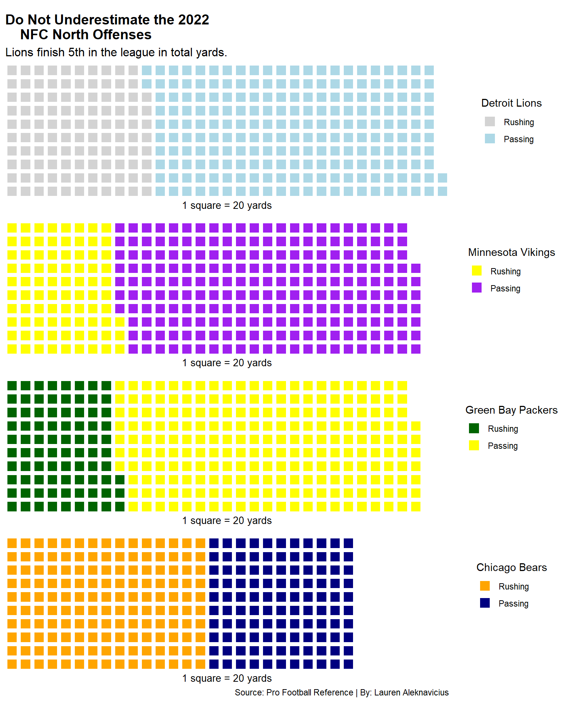
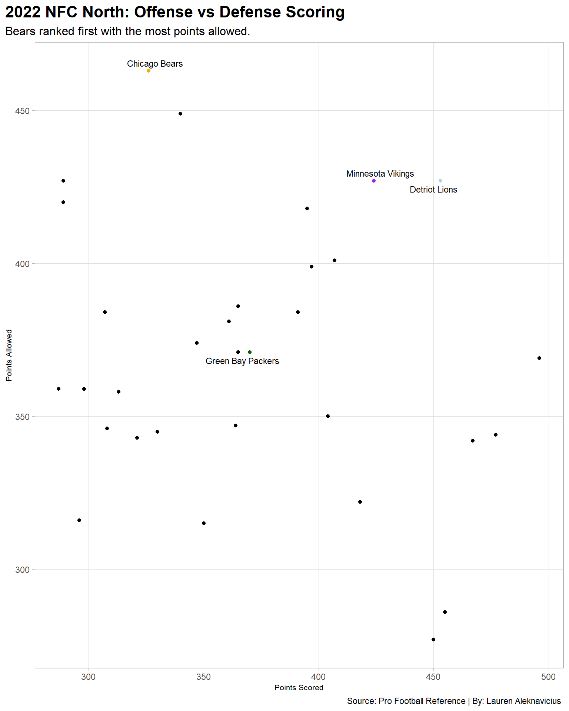

Was the NFC North the most cursed conference in the 2022 season?
football
sports
data
Author
Lauren Aleknavicius
Published
November 10, 2023
NFC North fans have been let down time after time watching their team throughout the entire 2022 season. The NFC North consists of the Green Bay Packers, Detroit Lions, Chicago Bears, and Minnesota Vikings. These teams had high hopes for 2022; however, they continuously finish in an unwanted standing.
The last time a team in the NFC North played in the Super Bowl was in 2011 with Green Bay winning. The conference ranks among the last in the league for Super Bowl appearances. In fact, the Lions have never even won a NFC North title. The last time they won a title was in 1993, when the conference was the NFC Central.
The NFC North has been consistent on offense, but their defense have been questionable. Fans could see a different dynamic between the conference throughout the entire 2022 season, for better and for worse.
This begs the question: Was the NFC North the most cursed conference in the 2022 season?
Let’s take a look at the numbers.
To start, the chart will showcase the total takeaways for each NFL team throughout the season. The more takeaways, the better. Where do the NFC North defenses rank among the rest of the league?
Code
library(tidyverse)library(ggalt)library(waffle)library(ggrepel)nfl <-read_csv("defense.csv")turnovers <- nfl |>group_by(Team) |>summarise(Giveaways =sum(OffInt,Fum),Takeaways =sum(TO))gb <- turnovers |>filter(Team =="Green Bay Packers")mn <- turnovers |>filter(Team =="Minnesota Vikings")ch <- turnovers |>filter(Team =="Chicago Bears")dt <- turnovers |>filter(Team =="Detroit Lions")ggplot() +geom_lollipop(data=turnovers,aes(y=reorder(Team, Takeaways), x=Takeaways),horizontal =TRUE ) +geom_lollipop(data=gb,aes(y=Team, x=Takeaways),horizontal =TRUE,color ="darkgreen" ) +geom_lollipop(data=dt,aes(y=Team, x=Takeaways),horizontal =TRUE,color ="lightblue" ) +geom_lollipop(data=mn,aes(y=Team, x=Takeaways),horizontal =TRUE,color ="purple" ) +geom_lollipop(data=ch,aes(y=reorder(Team, Takeaways), x=Takeaways),horizontal =TRUE,color ="orange" ) +theme_light() +labs(title ="The NFC North's 2022 Defense: Middle of the Pack",subtitle ="Vikings owned the conference with the best defense.",caption ="Source: Pro Football Reference | By: Lauren Aleknavicius ",y="" ) +theme(plot.title =element_text(size =16, face ="bold"),plot.subtitle =element_text(size =12),axis.title =element_text(size =8),panel.grid.minor =element_blank(),plot.title.position ="plot" )
Now, let’s look at how the offense compares in rushing and passing yards. The Lions, surprisingly, finished 5th in the league. Thus, the Lions were at the top compared to the rest of the NFC North in total yards. The Vikings were closest in competition to the Lions finishing 7th overall.
So, is the NFC North actually a force to be reckoned with on offense? Meaning, does this conference have the worst luck in history?
Code
yds <-read_csv("offense.csv")north <- yds |>select( Team, Conf, PassYds, RushYds ) |>filter(Conf =="NFC North")dtwaffle <-c("Rushing"=2179, "Passing"=4281)chwaffle <-c("Rushing"=3014, "Passing"=2219, 1227)gbwaffle <-c("Rushing"=2113, "Passing"=3632, 715)mnwaffle <-c("Rushing"=1661, "Passing"=4484, 315)iron(waffle( dtwaffle/20,rows=10,xlab="1 square = 20 yards",colors =c("lightgrey", "lightblue")) +labs(title ="Do Not Underestimate the 2022 NFC North Offenses",subtitle ="Lions finish 5th in the league in total yards." ) +theme(plot.title =element_text(size =14, face ="bold"),plot.subtitle =element_text(size =12) )+guides(fill=guide_legend(title="Detroit Lions")),waffle( mnwaffle/20,rows=10,xlab="1 square = 20 yards",colors =c("yellow", "purple", "white") )+guides(fill=guide_legend(title="Minnesota Vikings")),waffle( mnwaffle/20,rows=10,xlab="1 square = 20 yards",colors =c("darkgreen", "yellow", "white"))+guides(fill=guide_legend(title="Green Bay Packers")),waffle ( chwaffle/20,rows =10, xlab="1 square = 20 yards",colors =c("orange", "navy", "white")) +labs(caption ="Source: Pro Football Reference | By: Lauren Aleknavicius" )+guides(fill=guide_legend(title="Chicago Bears"))) +theme(axis.title =element_text(size =8),panel.grid.minor =element_blank(),plot.title.position ="plot" )

Last, we will look at the total points scored versus allowed by each team in our conference compared to the rest of the league. The Bears are ultimately the worst team on defense in the league. They allowed the most points scored. On the other hand, the rest of the defense made stops.
Again, the Lions ranked among the highest in points scored; however, they also have some of the most points allowed. Is this why they have never won a NFC North title?
Code
totals <-read_csv("games.csv")gbtd <- totals |>filter(Team =="Green Bay Packers")mntd <- totals |>filter(Team =="Minnesota Vikings")chtd <- totals |>filter(Team =="Chicago Bears")dttd <- totals |>filter(Team =="Detroit Lions")ggplot() +geom_point(data=totals,aes(x=PF, y=PA)) +geom_point(data=dttd, aes(x=PF, y=PA), color="lightblue", ) +geom_point(data=chtd, aes(x=PF, y=PA), color="orange") +geom_point(data=gbtd, aes(x=PF, y=PA), color="darkgreen") +geom_point(data=mntd, aes(x=PF, y=PA), color="purple") +geom_text_repel(data=dttd, aes(x=PF, y=PA, label="Detriot Lions"), size=3) +geom_text_repel(data=chtd, aes(x=PF, y=PA, label="Chicago Bears"), size=3) +geom_text_repel(data=gbtd, aes(x=PF, y=PA, label="Green Bay Packers"), size=3) +geom_text_repel(data=mntd, aes(x=PF, y=PA, label="Minnesota Vikings"), size=3) +labs(title ="2022 NFC North: Best and Worst Points in the League",subtitle ="Bears ranked first with the most points allowed.",caption ="Source: Pro Football Reference | By: Lauren Aleknavicius ",x="Points Scored",y="Points Allowed" ) +theme_light() +theme(plot.title =element_text(size =16, face ="bold"),plot.subtitle =element_text(size =12),axis.title =element_text(size =8),panel.grid.minor =element_blank(),plot.title.position ="plot" )

Overall, every NFC North team played surprisingly well, but just does not compare to the other teams in the league. This confirms that the conference was the most cursed throughout 2022. There is high hopes for the 2023 season.
The NFC North has had a drastic change within quarterbacks in 2023; therefore, will the teams outperform compared to last year or will they finish even worse? This question is keeping fans on their toes.
Where does the conference finish this year? Will the Lions continue to lead the conference and win their first NFC North title? Signs are pointing in their direction.